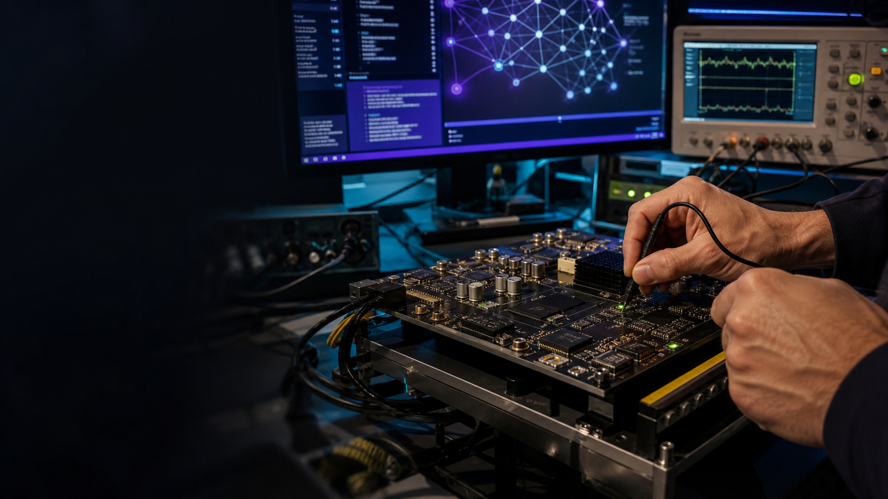

Laboratory
Explore dual-path optical tweezers and metasurface chips through interactive experiments.
01 / Quantum optics
Arrange the microscopic world with light.
Optical tweezers trap atoms, not create them.
An SLM shapes the field and an objective focuses it into traps that hold existing atoms through optical dipole forces. Initialization, coherent control and readout are additional steps in quantum information experiments.
Read the reference ↗α is the dynamic polarizability. For positive α, atoms are attracted to intensity maxima.
02 / Metasurface chip
One chip. An array of optical tweezers.
From light fields to optical traps
Chips shape light. Optical traps hold atoms.
A metasurface uses subwavelength structures to shape incident light into multiple focused spots. Under suitable conditions, optical dipole forces trap existing cold atoms. Internal atomic states can encode qubits; state preparation, gates and readout require additional systems and are not simulated here.
Reference: in-vacuum metasurface trap arrays ↗Local transmission amplitude t and phase φ shape the output field.
The microstructure view is illustrative, not a fabrication layout.